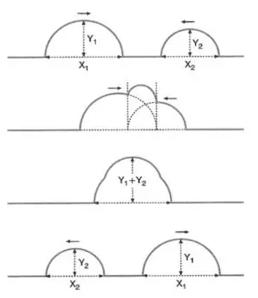

Üstüste Binme ve Duran Dalgalar
Üst üste binme(süperpozisyon/overlap), nesnelerin, jeolojik katmanların, dalgaların veya verilerin çakışması, örtüşmesi veya bir sistemin aynı anda birden fazla durumda bulunması durumu olarak tanımlanır. Bu terim; fizik, jeoloji ve teknoloji gibi farklı alanlarda temel bir prensip olarak kullanılır
